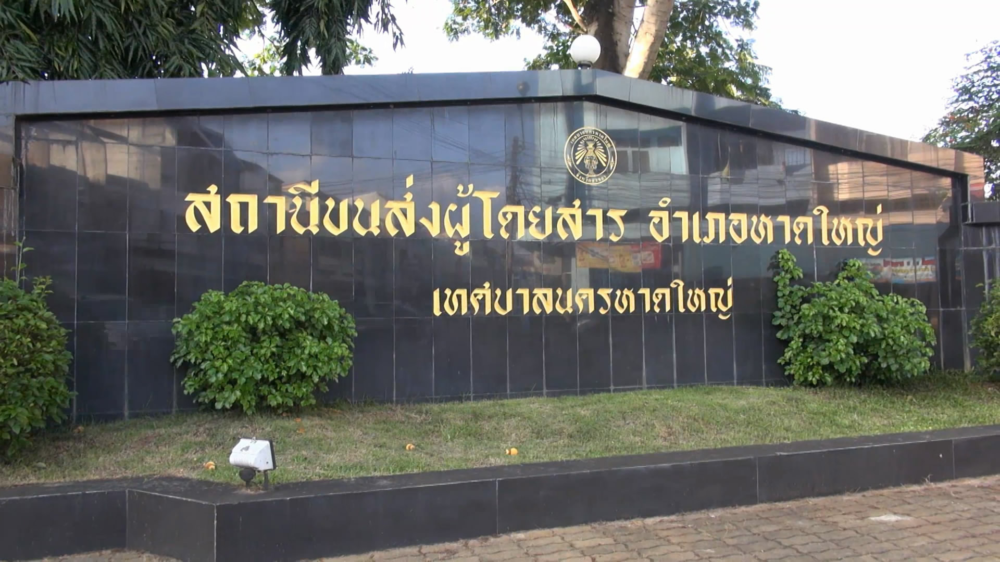
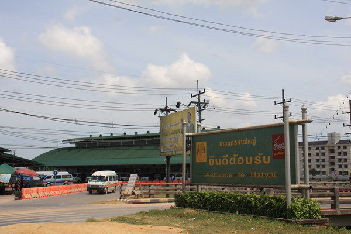

สามารถขึ้นรถโดยสาร หรือรถตู้ได้ที่ สถานีขนส่งผู้โดยสารหาดใหญ่(ข้าง Central Festival Hatyai) และ สถานีขนส่งรถตู้โดยสารหาดใหญ่แหล่งที่ 2 (ตลาดเกษตร) เพื่อไปลงสตูล

สถานีขนส่งผู้โดยสารหาดใหญ่(ข้าง Central Festival Hatyai)

ตลาดเกษตร